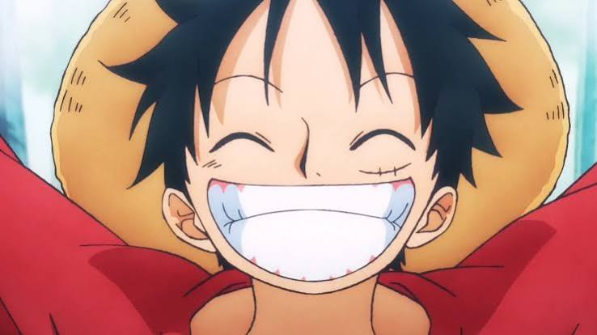

Luffy was inspired by the Pirate Shanks (who also became one of the four emperors) Luffy set out to sea to begin his own adventure of becoming king of the pirates Along the way he formed his own crew the Straw Hat Pirates one by one and traveld across the Grand Line in search of the one piece. Luffy is one of the most energetic, carefree, and sometimes reckless character in the anime. However he cares deeply about his crew and friends and will do almotst anything to protect them like go against the whole government in one arc.
Luffy ate the Gomu Gomu (Gum Gum) no Mi devil fruit giving his body rubber like properties. He comines this ability with his hand to hand fighting style to create powerful and unique attacks along with his haki.